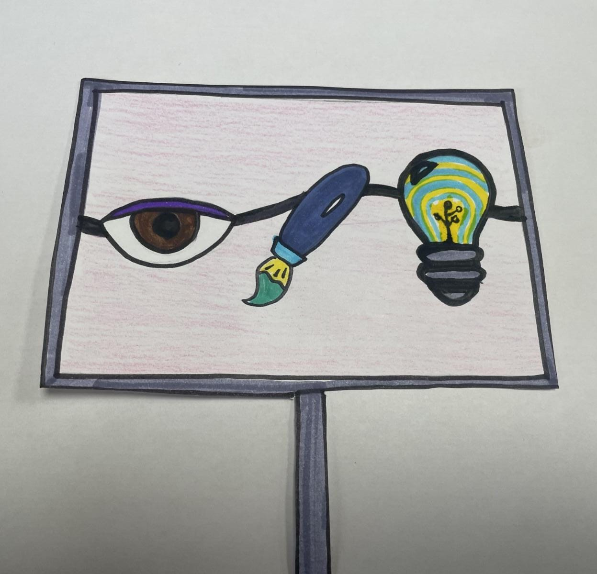

|
Hola, me llamo Luis Chávez. Tengo 24 años y actualmente curso la carrera de publicidad y marketing digital, como pasatiempos tengo pasear en bicicleta y ver de manera casual fútbol, como colores preferidos tengo 2, el carmesí y purpura. Además, me gusta observar el mar a pesar de mi talasofobía. |
Trabajo en clase 1
|  |
Se nos indico la creación de un logo como grupo, al tener integrantes de otras carreras se coloco imagenes relacionadas a esta, un ojo por la publicida, un pincel por diseño y una bombilla para representar la creatividad. |

|
Con la imagen ya modifica para usarse en la impresora 3D, se observo el proceso de creación del logo con un tiempo de 20 minutos aproximado. |
|
La imagen no salio tan bien como se esperaba (ToT) pero, se aprendio el uso de la impresora y el ensamblaje de los materiales requeridos. |